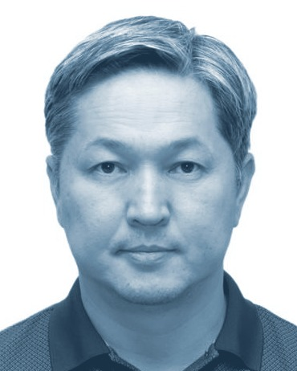
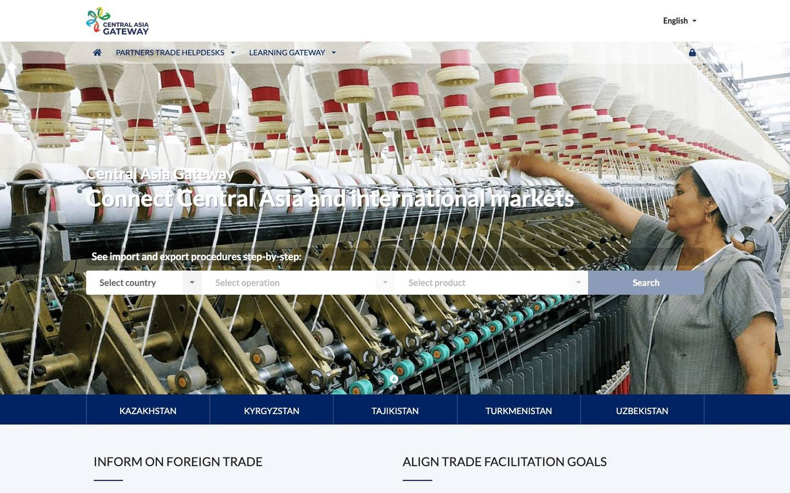

Бүгінде не бар?
Қағидалар, жауапты мекемелер, рәсімдер және олардың қайсысы цифрланған.
Бұл бағалау неліктен қажет
Инвестор қайда бару керегін, не алатынын, қанша уақыт кететінін және нәтижеге кім жауап беретінін түсінуі тиіс. Бағалау осыдан басталады: ол елден елге не бар екенін, ненің цифрланғанын және әр елдің алдымен нені жақсартқысы келетінін құжаттайды — ынтымақтастық осылайша дәлелдерге сүйеніп құрылады.

«Инвестор мұны нақты түсінуі керек: қайда жүгіну керек, не алады, процесс қанша уақытқа созылады және нәтиже үшін кім жауап береді».
Өңір аймақтарының келесі кезеңі салықтық жеңілдіктер мен инфрақұрылымнан әрі асады: цифрлық, кіріктірілген, халықаралық бағдардағы аймақ. Инвестор орын таңдаудан жобаны іске қосуға дейінгі жолды цифрлық ортада өтуі тиіс: жер мен ғимараттар, қосылу құны, жеңілдіктер, тіркеу және кеден режимдері — барлығы онлайн. Цифрландыру — жай технологиялық құрал емес; ол инвестициялық саясаттың құралына айналып келеді.
Инвесторлар енді бір ел мен бір нарықты ғана таңдамайды: олар өңірге тұтас қарайды. Өндіріс бір елде, шикізат екінші елден, логистикалық бағыт үшінші ел арқылы өтуі мүмкін. Бұл жекелеген аймақтар арасындағы бәсекеден елдер арасындағы аймақтар ынтымақтастығына көшуді талап етеді — сонда Орталық Азияға келген инвестор біртұтас, түсінікті, цифрлық және бәсекеге қабілетті инвестициялық өңірді көреді.
Бағалау нені қамтиды
Қағидалар, жауапты мекемелер, рәсімдер және олардың қайсысы цифрланған.
Ел бірінші кезекте қалайтын жақсартулар және олардың қаншалықты шұғыл екені.
Жұмыс істеп жатқан реформалар, бастамалар мен әріптестер — соларға сүйену және қайталамау үшін.
Бағалаудан кейін
Цифрлық аймақ қызметі инвестордың орын таңдаудан жобаны іске қосуға дейінгі жолды цифрлық ортадан шықпай өтуін білдіреді: бос жер мен ғимараттар, инфрақұрылым мен қосылу құны, жеңілдіктер, тіркеу, кеден режимі — барлығы онлайн, бір процесте, соңында бір тексерілетін сертификатпен. Бұған үш қадам жеткізеді: рәсімдерді ашық ету, оларды оңайлату, содан кейін цифрландыру. Ешкім оңайлатпаған рәсімді цифрландыру — қатеге тезірек жету ғана.
Әр рәсімді пайдаланушы тұрғысынан жариялау: қадамдар, құжаттар, құны, мерзімдері, құқықтық негізі; өзектілігін құзыретті орган қамтамасыз етеді.
Бақылау қоспайтын қадамдар мен талаптарды алып тастау. Кім не үшін жауап беретінін нақтылау.
Оңайлатылған рәсімдерді онлайн-қызметтерге айналдыру: өтінімдер, келісулер, төлемдер, ұзарту. ЮНКТАД-тың eRegistrations платформасы — қолжетімді құралдардың бірі; ел өз заңнамасы мен мүмкіндіктеріне сай келетінін таңдайды.
Аймақ туралы заңды ұсыныс ретінде оқу: ел инвесторларға не ұсынады және оның орнына не күтеді. Рәсімді заң деңгейінен төмен түсіру — сонда қызметтер парламентке қайта жүгінбей-ақ жақсара алады; бейімдеуге арналған үлгілік реттеу әзірленуде. Толығырақ →
Тәжірибеде
Бұл мысалдар ықтимал тәсілдерді көрсетеді. Олар Орталық Азияға ұсынылған жобалар емес және әр елдің басымдықтарына, мекемелеріне және құқықтық базасына бейімдеместен қайталанбайды.
Central Asia Gateway (infotradecentralasia.org) бес елдің ұлттық сауда порталдарын біріктіреді. Импорт, экспорт немесе транзиттің әр рәсімі бойынша ол пайдаланушыға қажет ақпаратты көрсетеді: қадамдар, талап етілетін құжаттар, мекемелер мен байланыс тұлғалары, құны және құқықтық негізі. Ол сауданы қамтиды, аймақтарды емес. Дәл осы өңірлік тәсілді аймақ рәсімдеріне де қолдануға болады.

Ямайканың институционалдық құрылымы Орталық Азиядағы көп елден қарапайым. Мұнда маңыздысы — инвестордың соңында көретіні: бір кіру нүктесі, картадағы барлық аймақ, бір процесс, бір сертификат.
Бағалау мен ұлттық есепті әріптестер ұсынады. Бұл бастама зерттеу сипатында және қатысушыларға да, әріптестерге де міндеттеме жүктемейді. Өңірлік нәтижелер жинақталған түрде ұсынылады; жекелеген елге сілтеме жасау үшін оның келісімі қажет.